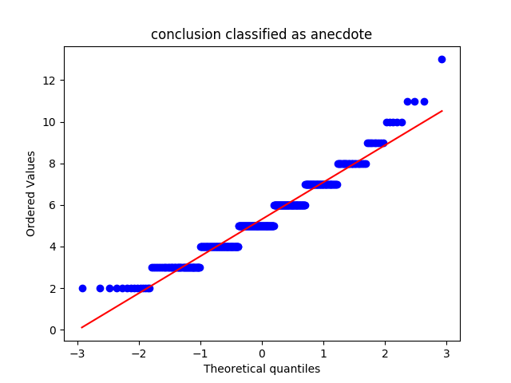
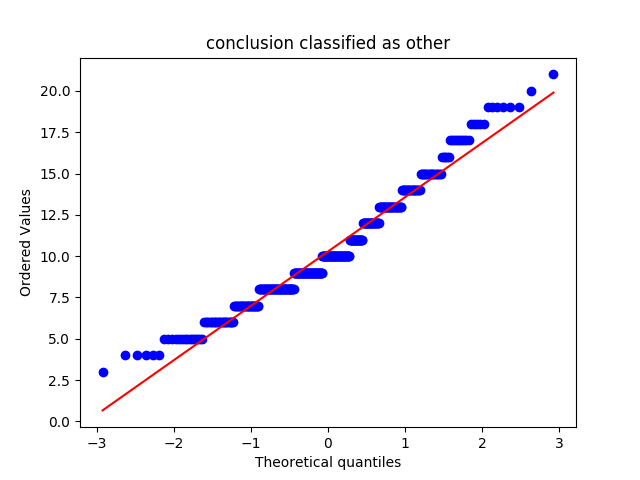
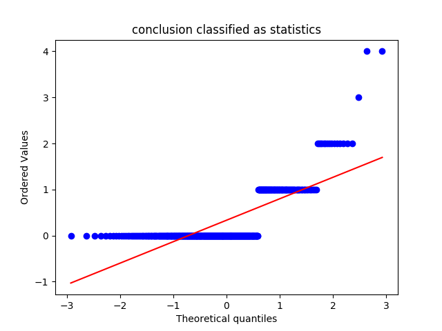
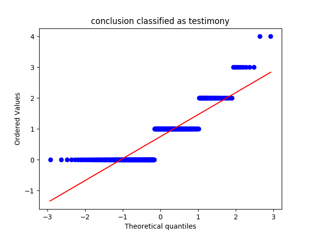
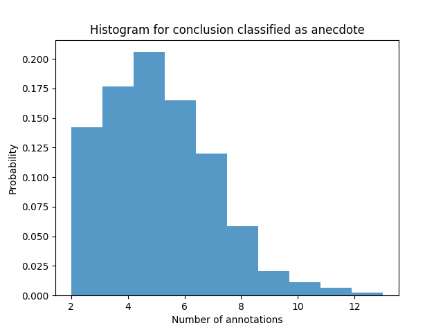
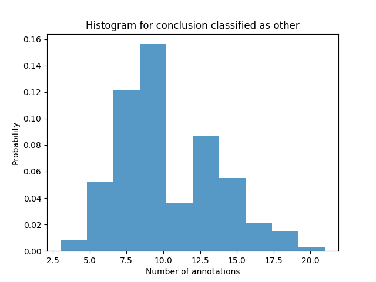
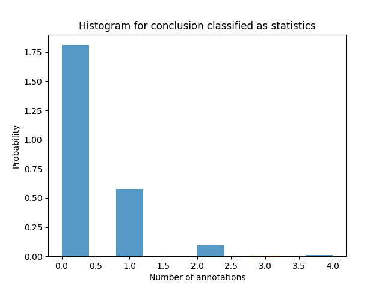
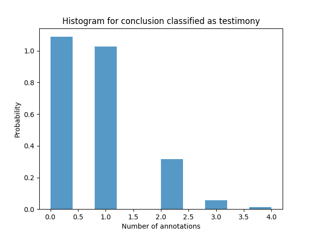
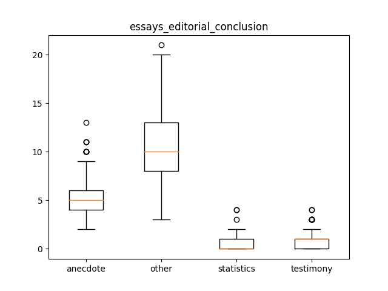

essays_editorial_conclusion
Describing the Data-Set
Mean, Median and Standard Deviation
|
anecdote |
other |
statistics |
testimony |
| median |
5.000000 |
10.000000 |
0.000000 |
1.000000 |
| mean |
5.313433 |
10.278607 |
0.333333 |
0.751244 |
| std |
1.812414 |
3.325911 |
0.609488 |
0.796642 |
QQ Plots




Histograms




Box Plot(s)

Normalization Test
stat: 0.951867103577, p-val:3.62086971517e-10
Not Normally distributed for conclusion classified as anecdote
stat: 0.964600086212, p-val:2.82651200223e-08
Not Normally distributed for conclusion classified as other
stat: 0.579715132713, p-val:5.33710734539e-30
Not Normally distributed for conclusion classified as statistics
stat: 0.791533112526, p-val:2.47301911066e-22
Not Normally distributed for conclusion classified as testimony
Significancy Test
Using friedmann-test
Using friedmann-test
using stats.friedmanchisquare
chisq: 1114.88452474
p-value: 2.14706650332e-241
statistic: 2891.97959267
p-value: 1.11022302463e-16
chi2:1059.14029851
ranking[1.3457711442786069, 3.9228855721393034, 1.6592039800995024, 3.072139303482587]
Post Hoc Analysis (holm_multitest):
------------------------------------------------------
Comparing: anecdote vs statistics
z_value: 18.9586352554
p_value: 0.0
adj_p_value: 0.0
--------------------------------------------------------------------------
Comparing: anecdote vs other
z_value: 9.34272803651
p_value: 0.0
adj_p_value: 0.0
--------------------------------------------------------------------------
Comparing: anecdote vs testimony
z_value: 15.5165775577
p_value: 0.0
adj_p_value: 0.0
--------------------------------------------------------------------------
Comparing: statistics vs other
z_value: 28.3013632919
p_value: 0.0
adj_p_value: 0.0
--------------------------------------------------------------------------
Comparing: other vs testimony
z_value: 24.8593055942
p_value: 0.0
adj_p_value: 0.0
--------------------------------------------------------------------------
Comparing: statistics vs testimony
z_value: 3.44205769766
p_value: 0.000577307100197
adj_p_value: 0.000577307100197
--------------------------------------------------------------------------